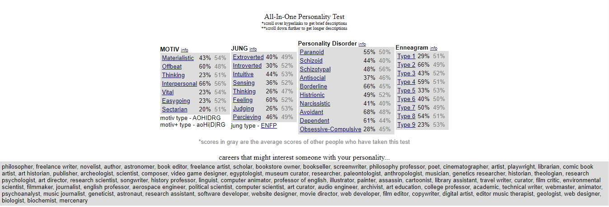

Sensitive to Others
-This trait grants me the ability to relate to and often feel another person's emotions.This is useful as it allows me to really
understand how someone is feeling and provide helpful solutions and/or effective consolation. It also makes me come off as warm to others,
helping to establish goodwill. In terms of development of this trait in the last 3-5 years, this is something that I was born with. If anything,
I have had to learn how to use it more sparingly as it has been used against me to affect my empathy and thus manipulate me.Loyal
-An increasingly rare quality, especialy at the intensity that I possess, my unwavering loyalty to those I let close to me is
a key ingredient in me forging a strong unity of support in my friendships. Not many things can waver my loyalty once its given. In the last few
years, my loyalty has been tested and it didnt always go successfully. I have learned and am still learning from these mistakes to further develop this trait.Passionate
-Once something piques my interest and goes on to completely capture it, I become driven to learn more and to do more as it relates to the topic.
When I am passionate about something, I go all in on it, giving all my faculties to it. This is another trait that I was born with, however I would say
about 5 years ago was when it truly blossomed, when I found my passion for natural hair.

The screenshot above is from the personality test on similarminds.com. I do not fully agree with it, nor any personality quiz. I took a few, and I took them multiple times.
Each time I took them, I got a different result and while partially correct, they were not 100% accurate. It's either that, or I just don't know myself to the full extent, which is also a possibility.